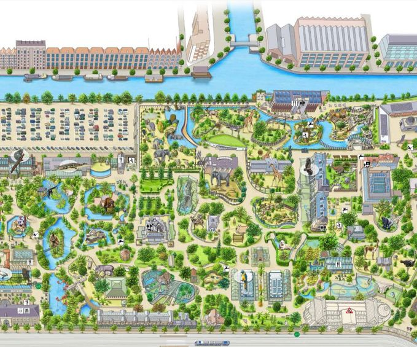

Actie: twee keer naar ARTIS voor €30,-
In ARTIS is geen bezoek hetzelfde. Beleef deze herfst nóg meer met het speciale actieticket en kom voor slechts €30 twee keer naar ARTIS!
terug naar...
ARTIS-Park is dagelijks geopend van 09.00 tot 17.00 uur. Het Planetarium is inbegrepen bij je ticket voor ARTIS-Park.
| Leeftijd/Groep | Online | Aan de kassa |
|---|---|---|
| 13+ jaar | €26,50 | €29,50 |
| 3 t/m 12 jaar | €22,50 | €25,50 |
| 0 t/m 2 jaar | gratis | gratis |
| Studenten | €13,25 | €14,75 |
| VriendenLoterij | - | €23,60 |
| Onderwijs | €6,50 | €6,50 |
| Zorgtarief | €5,- | €5,- |
In ARTIS is geen bezoek hetzelfde. Beleef deze herfst nóg meer met het speciale actieticket en kom voor slechts €30 twee keer naar ARTIS!
ARTIS ligt in de Plantagebuurt, waar natuur en cultuur elkaar ontmoeten in het hart van Amsterdam. Het park en musea zijn eenvoudig te bereiken met het openbaar vervoer en beschikken over een eigen parkeerterrein. Ontdek alle mogelijkheden en plan je bezoek zorgeloos.


Van een snelle snack tot een goed diner, in ARTIS is er voor iedereen wat te vinden. Geniet van gerechten, bereid met duurzame ingrediënten. Voor groepen zijn er speciale arrangementen beschikbaar. Bekijk alle horecalocaties.
Bij ARTIS is iedereen welkom om natuur te ervaren. Het park, Micropia en het Groote Museum zijn grotendeels rolstoelvriendelijk, met diverse voorzieningen voor bezoekers met een beperking. Van speciale parkeerplaatsen tot toegankelijke toiletten, om het bezoek zo aangenaam mogelijk te maken.
Met de overzichtelijke plattegrond mis je geen enkele bijzondere plek in ARTIS. Ontdek eenvoudig de dierverblijven, wandelpaden en tuinen, en plan je route langs alle hoogtepunten
Plantage Kerklaan 38 - 40
koop je ticket